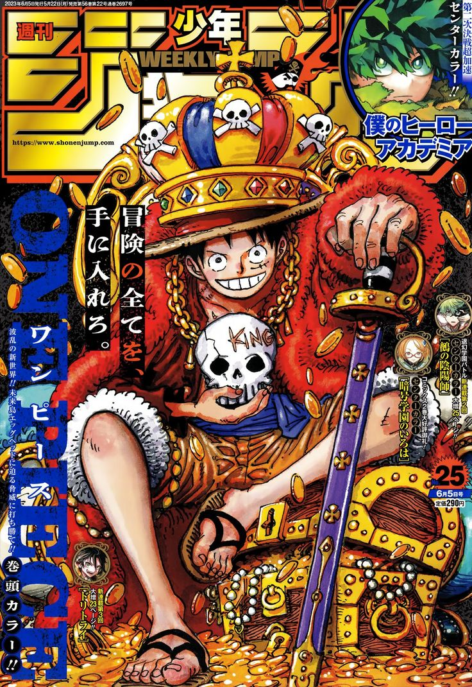

¿Qué es?

Es una serie de manga y anime creada por Eichiro Oda en 1997, en la que seguimos a Monkey D. Luffy en su
aventura por encontrar el mayor tesoro del mundo, el One Piece, y convertirse en el rey de los piratas.
¿Por que verlo?

Aunque la camtidad de capitulos te pueda hechar para atrás siempre es un buen momento para comenzar a ver One
Piece, algunas de las razones son: sus personajes con profundidad y bien desarrollados a largo de la serie, sus
increibles peleas en cada arco y los momentos graciosos junto a la gran calidad de animación de los últmos arcos, el
secreto de que es el One Piece y un mundo entero bien construido.
Opciones para ver o leer
Siendo una serie tan popular tienes muchas opciones para disgrutar de su historia, puedes leer el manga en
digital o en físico, en España tenemos la edición normal y la especial 3 en 1 con una mejor traducción y páginas
más grandes, después también puedes ver el anime junto con las películas y también está la opción del Live
Action producido por Netflix, aunque tan solo tiene una temporada.